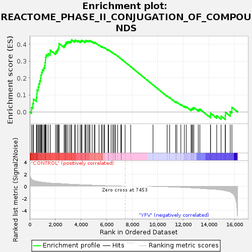
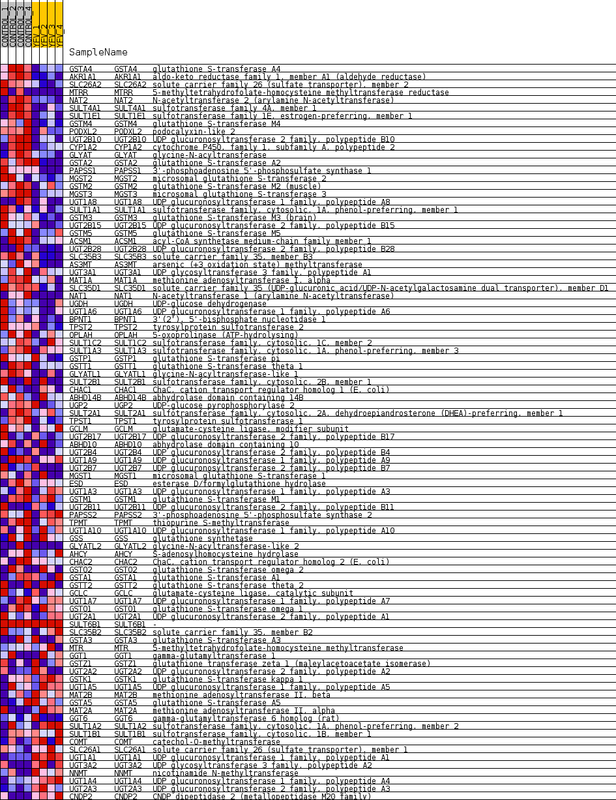
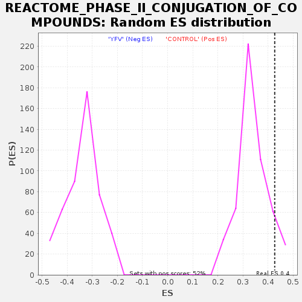

| Dataset | MATRIZ_GSE99081_collapsed_to_symbols.gsea_CLASE_99081.cls#CONTROL_versus_YFV |
| Phenotype | gsea_CLASE_99081.cls#CONTROL_versus_YFV |
| Upregulated in class | CONTROL |
| GeneSet | REACTOME_PHASE_II_CONJUGATION_OF_COMPOUNDS |
| Enrichment Score (ES) | 0.42680562 |
| Normalized Enrichment Score (NES) | 1.273054 |
| Nominal p-value | 0.05566219 |
| FDR q-value | 0.9416412 |
| FWER p-Value | 1.0 |

| SYMBOL | TITLE | RANK IN GENE LIST | RANK METRIC SCORE | RUNNING ES | CORE ENRICHMENT | |
|---|---|---|---|---|---|---|
| 1 | GSTA4 | glutathione S-transferase A4 | 136 | 1.188 | 0.0269 | Yes |
| 2 | AKR1A1 | aldo-keto reductase family 1, member A1 (aldehyde reductase) | 240 | 1.009 | 0.0505 | Yes |
| 3 | SLC26A2 | solute carrier family 26 (sulfate transporter), member 2 | 288 | 0.960 | 0.0761 | Yes |
| 4 | MTRR | 5-methyltetrahydrofolate-homocysteine methyltransferase reductase | 518 | 0.823 | 0.0864 | Yes |
| 5 | NAT2 | N-acetyltransferase 2 (arylamine N-acetyltransferase) | 557 | 0.801 | 0.1078 | Yes |
| 6 | SULT4A1 | sulfotransferase family 4A, member 1 | 571 | 0.794 | 0.1306 | Yes |
| 7 | SULT1E1 | sulfotransferase family 1E, estrogen-preferring, member 1 | 661 | 0.759 | 0.1476 | Yes |
| 8 | GSTM4 | glutathione S-transferase M4 | 710 | 0.739 | 0.1666 | Yes |
| 9 | PODXL2 | podocalyxin-like 2 | 775 | 0.710 | 0.1838 | Yes |
| 10 | UGT2B10 | UDP glucuronosyltransferase 2 family, polypeptide B10 | 849 | 0.689 | 0.1997 | Yes |
| 11 | CYP1A2 | cytochrome P450, family 1, subfamily A, polypeptide 2 | 873 | 0.681 | 0.2185 | Yes |
| 12 | GLYAT | glycine-N-acyltransferase | 926 | 0.667 | 0.2351 | Yes |
| 13 | GSTA2 | glutathione S-transferase A2 | 989 | 0.647 | 0.2505 | Yes |
| 14 | PAPSS1 | 3'-phosphoadenosine 5'-phosphosulfate synthase 1 | 1099 | 0.618 | 0.2621 | Yes |
| 15 | MGST2 | microsomal glutathione S-transferase 2 | 1175 | 0.601 | 0.2753 | Yes |
| 16 | GSTM2 | glutathione S-transferase M2 (muscle) | 1195 | 0.594 | 0.2918 | Yes |
| 17 | MGST3 | microsomal glutathione S-transferase 3 | 1227 | 0.590 | 0.3074 | Yes |
| 18 | UGT1A8 | UDP glucuronosyltransferase 1 family, polypeptide A8 | 1237 | 0.588 | 0.3243 | Yes |
| 19 | SULT1A1 | sulfotransferase family, cytosolic, 1A, phenol-preferring, member 1 | 1293 | 0.573 | 0.3380 | Yes |
| 20 | GSTM3 | glutathione S-transferase M3 (brain) | 1435 | 0.543 | 0.3454 | Yes |
| 21 | UGT2B15 | UDP glucuronosyltransferase 2 family, polypeptide B15 | 1594 | 0.510 | 0.3507 | Yes |
| 22 | GSTM5 | glutathione S-transferase M5 | 1600 | 0.508 | 0.3655 | Yes |
| 23 | ACSM1 | acyl-CoA synthetase medium-chain family member 1 | 2013 | 0.482 | 0.3543 | Yes |
| 24 | UGT2B28 | UDP glucuronosyltransferase 2 family, polypeptide B28 | 2112 | 0.466 | 0.3621 | Yes |
| 25 | SLC35B3 | solute carrier family 35, member B3 | 2184 | 0.458 | 0.3713 | Yes |
| 26 | AS3MT | arsenic (+3 oxidation state) methyltransferase | 2251 | 0.448 | 0.3806 | Yes |
| 27 | UGT3A1 | UDP glycosyltransferase 3 family, polypeptide A1 | 2283 | 0.443 | 0.3918 | Yes |
| 28 | MAT1A | methionine adenosyltransferase I, alpha | 2288 | 0.443 | 0.4047 | Yes |
| 29 | SLC35D1 | solute carrier family 35 (UDP-glucuronic acid/UDP-N-acetylgalactosamine dual transporter), member D1 | 2684 | 0.385 | 0.3917 | Yes |
| 30 | NAT1 | N-acetyltransferase 1 (arylamine N-acetyltransferase) | 2757 | 0.373 | 0.3984 | Yes |
| 31 | UGDH | UDP-glucose dehydrogenase | 2803 | 0.366 | 0.4064 | Yes |
| 32 | UGT1A6 | UDP glucuronosyltransferase 1 family, polypeptide A6 | 2872 | 0.357 | 0.4128 | Yes |
| 33 | BPNT1 | 3'(2'), 5'-bisphosphate nucleotidase 1 | 2986 | 0.344 | 0.4161 | Yes |
| 34 | TPST2 | tyrosylprotein sulfotransferase 2 | 3132 | 0.328 | 0.4168 | Yes |
| 35 | OPLAH | 5-oxoprolinase (ATP-hydrolysing) | 3233 | 0.317 | 0.4201 | Yes |
| 36 | SULT1C2 | sulfotransferase family, cytosolic, 1C, member 2 | 3275 | 0.313 | 0.4268 | Yes |
| 37 | SULT1A3 | sulfotransferase family, cytosolic, 1A, phenol-preferring, member 3 | 3498 | 0.289 | 0.4216 | No |
| 38 | GSTP1 | glutathione S-transferase pi | 3572 | 0.281 | 0.4255 | No |
| 39 | GSTT1 | glutathione S-transferase theta 1 | 3758 | 0.261 | 0.4218 | No |
| 40 | GLYATL1 | glycine-N-acyltransferase-like 1 | 3941 | 0.247 | 0.4178 | No |
| 41 | SULT2B1 | sulfotransferase family, cytosolic, 2B, member 1 | 4029 | 0.241 | 0.4196 | No |
| 42 | CHAC1 | ChaC, cation transport regulator homolog 1 (E. coli) | 4074 | 0.237 | 0.4240 | No |
| 43 | ABHD14B | abhydrolase domain containing 14B | 4314 | 0.218 | 0.4156 | No |
| 44 | UGP2 | UDP-glucose pyrophosphorylase 2 | 4332 | 0.217 | 0.4210 | No |
| 45 | SULT2A1 | sulfotransferase family, cytosolic, 2A, dehydroepiandrosterone (DHEA)-preferring, member 1 | 4404 | 0.211 | 0.4229 | No |
| 46 | TPST1 | tyrosylprotein sulfotransferase 1 | 4530 | 0.200 | 0.4211 | No |
| 47 | GCLM | glutamate-cysteine ligase, modifier subunit | 4633 | 0.189 | 0.4204 | No |
| 48 | UGT2B17 | UDP glucuronosyltransferase 2 family, polypeptide B17 | 4702 | 0.183 | 0.4216 | No |
| 49 | ABHD10 | abhydrolase domain containing 10 | 4879 | 0.168 | 0.4157 | No |
| 50 | UGT2B4 | UDP glucuronosyltransferase 2 family, polypeptide B4 | 5045 | 0.155 | 0.4101 | No |
| 51 | UGT1A9 | UDP glucuronosyltransferase 1 family, polypeptide A9 | 5090 | 0.150 | 0.4118 | No |
| 52 | UGT2B7 | UDP glucuronosyltransferase 2 family, polypeptide B7 | 5411 | 0.120 | 0.3955 | No |
| 53 | MGST1 | microsomal glutathione S-transferase 1 | 5627 | 0.104 | 0.3853 | No |
| 54 | ESD | esterase D/formylglutathione hydrolase | 5648 | 0.102 | 0.3871 | No |
| 55 | UGT1A3 | UDP glucuronosyltransferase 1 family, polypeptide A3 | 5788 | 0.091 | 0.3812 | No |
| 56 | GSTM1 | glutathione S-transferase M1 | 5851 | 0.088 | 0.3800 | No |
| 57 | UGT2B11 | UDP glucuronosyltransferase 2 family, polypeptide B11 | 6128 | 0.066 | 0.3649 | No |
| 58 | PAPSS2 | 3'-phosphoadenosine 5'-phosphosulfate synthase 2 | 6143 | 0.065 | 0.3659 | No |
| 59 | TPMT | thiopurine S-methyltransferase | 6152 | 0.064 | 0.3673 | No |
| 60 | UGT1A10 | UDP glucuronosyltransferase 1 family, polypeptide A10 | 6359 | 0.049 | 0.3560 | No |
| 61 | GSS | glutathione synthetase | 6499 | 0.038 | 0.3486 | No |
| 62 | GLYATL2 | glycine-N-acyltransferase-like 2 | 6535 | 0.036 | 0.3475 | No |
| 63 | AHCY | S-adenosylhomocysteine hydrolase | 6657 | 0.029 | 0.3408 | No |
| 64 | CHAC2 | ChaC, cation transport regulator homolog 2 (E. coli) | 6672 | 0.028 | 0.3408 | No |
| 65 | GSTO2 | glutathione S-transferase omega 2 | 6682 | 0.027 | 0.3410 | No |
| 66 | GSTA1 | glutathione S-transferase A1 | 6864 | 0.017 | 0.3303 | No |
| 67 | GSTT2 | glutathione S-transferase theta 2 | 7132 | 0.004 | 0.3139 | No |
| 68 | GCLC | glutamate-cysteine ligase, catalytic subunit | 7134 | 0.004 | 0.3140 | No |
| 69 | UGT1A7 | UDP glucuronosyltransferase 1 family, polypeptide A7 | 7143 | 0.004 | 0.3136 | No |
| 70 | GSTO1 | glutathione S-transferase omega 1 | 7166 | 0.002 | 0.3123 | No |
| 71 | UGT2A1 | UDP glucuronosyltransferase 2 family, polypeptide A1 | 7449 | 0.000 | 0.2948 | No |
| 72 | SULT6B1 | - | 7888 | 0.000 | 0.2677 | No |
| 73 | SLC35B2 | solute carrier family 35, member B2 | 9632 | -0.009 | 0.1600 | No |
| 74 | GSTA3 | glutathione S-transferase A3 | 10736 | -0.079 | 0.0940 | No |
| 75 | MTR | 5-methyltetrahydrofolate-homocysteine methyltransferase | 10933 | -0.096 | 0.0847 | No |
| 76 | GGT1 | gamma-glutamyltransferase 1 | 11395 | -0.138 | 0.0603 | No |
| 77 | GSTZ1 | glutathione transferase zeta 1 (maleylacetoacetate isomerase) | 11494 | -0.147 | 0.0586 | No |
| 78 | UGT2A2 | UDP glucuronosyltransferase 2 family, polypeptide A2 | 11805 | -0.175 | 0.0446 | No |
| 79 | GSTK1 | glutathione S-transferase kappa 1 | 12084 | -0.201 | 0.0333 | No |
| 80 | UGT1A5 | UDP glucuronosyltransferase 1 family, polypeptide A5 | 12236 | -0.218 | 0.0304 | No |
| 81 | MAT2B | methionine adenosyltransferase II, beta | 12602 | -0.254 | 0.0154 | No |
| 82 | GSTA5 | glutathione S-transferase A5 | 12668 | -0.261 | 0.0191 | No |
| 83 | MAT2A | methionine adenosyltransferase II, alpha | 12733 | -0.269 | 0.0232 | No |
| 84 | GGT6 | gamma-glutamyltransferase 6 homolog (rat) | 12822 | -0.280 | 0.0260 | No |
| 85 | SULT1A2 | sulfotransferase family, cytosolic, 1A, phenol-preferring, member 2 | 13170 | -0.324 | 0.0142 | No |
| 86 | SULT1B1 | sulfotransferase family, cytosolic, 1B, member 1 | 13293 | -0.338 | 0.0167 | No |
| 87 | COMT | catechol-O-methyltransferase | 14122 | -0.467 | -0.0207 | No |
| 88 | SLC26A1 | solute carrier family 26 (sulfate transporter), member 1 | 14128 | -0.467 | -0.0072 | No |
| 89 | UGT1A1 | UDP glucuronosyltransferase 1 family, polypeptide A1 | 14608 | -0.518 | -0.0214 | No |
| 90 | UGT3A2 | UDP glycosyltransferase 3 family, polypeptide A2 | 14949 | -0.607 | -0.0245 | No |
| 91 | NNMT | nicotinamide N-methyltransferase | 15277 | -0.727 | -0.0231 | No |
| 92 | UGT1A4 | UDP glucuronosyltransferase 1 family, polypeptide A4 | 15290 | -0.733 | -0.0021 | No |
| 93 | UGT2A3 | UDP glucuronosyltransferase 2 family, polypeptide A3 | 15666 | -0.937 | 0.0025 | No |
| 94 | CNDP2 | CNDP dipeptidase 2 (metallopeptidase M20 family) | 15796 | -1.107 | 0.0274 | No |

